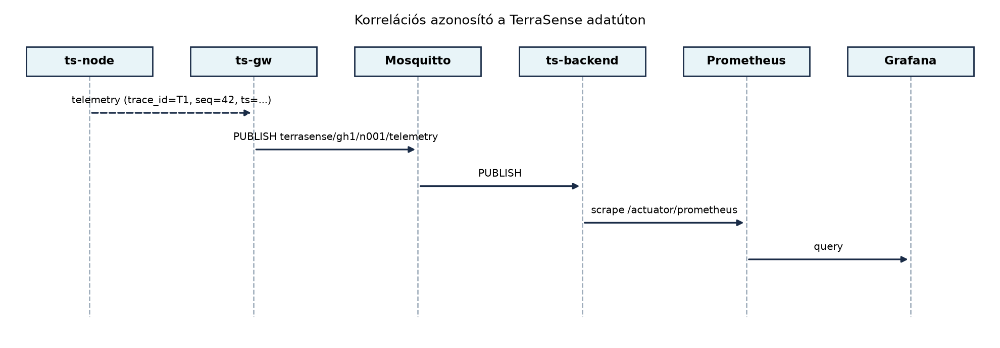

A TerraSense egyetlen hőmérséklet-mérése hosszú utat jár be, mire a
Grafana-dashboardon grafikonként megjelenik: a ts-node
szenzorcsomópont begyűjti, a ts-gw fogadja és MQTT-n
továbbítja, a Mosquitto broker közvetíti, a ts-backend
ingest-szolgáltatása feldolgozza, a TimescaleDB tárolja, végül a Grafana
lekérdezi. Ha a felhasználó azt tapasztalja, hogy a legfrissebb adat
több perce hiányzik, vagy a riasztás nem indult el, akkor az
üzemeltetőnek azt kell eldöntenie, hogy a hibás mérés, az eldugult
gateway, az MQTT-kapcsolat, a backend-kivétel vagy éppen a
dashboard-konfiguráció okozza-e a problémát. A hagyományos, csak helyi
naplófájlokra épülő hibakeresés ilyenkor lassú, mert minden réteget
külön kell megvizsgálni, és a bejegyzések között nincs közös kapocs.
A megfigyelhetőség ezt a szétszabdalt képet rendezi össze:
metrikákkal méri a rendszer viselkedését, strukturált naplókkal rögzíti
az eseményeket, nyomokkal pedig egy-egy tranzakció útját követi végig a
komponenseken. A TerraSense számára a legfontosabb, hogy egy
trace_id korrelációs azonosító már az eszközön
megszülessen, és ugyanaz az azonosító jelenjen meg a gateway, a backend
és a dashboard naplóiban, metrikáiban is. Így egy elakadt mérés esetén
nem kell találgatni: a trace_id alapján azonnal látható,
melyik rétegben akadt el az adat.
Definíció. A megfigyelhetőség (observability) az a tulajdonság, amely lehetővé teszi, hogy a rendszer külső jelei – metrikák, naplók és nyomok – alapján megállapítsuk a belső állapotát, és ok-okozati összefüggéseket tárjunk fel anélkül, hogy új kódot kellene hozzáadnunk. A három pillér nem egymás helyettesítője, hanem egymást kiegészítő eszköz.
A metrika egy időben aggregált, numerikus mérőszám, amelyet periodikusan gyűjtünk. Az IoT-rendszerekben két nagy csoportra oszlik: az üzleti metrikákra, például az üzenetkésésre vagy a csomagvesztésre, és az erőforrás-metrikákra, például az akkumulátor-töltöttségre, a szabad heapre vagy a processzor-terhelésre. A metrikák tárolása olcsó, lekérdezésük gyors, ezért alkalmasak riasztási szabályok és dashboardok mögé.
A strukturált napló egy géppel könnyen feldolgozható, sémával
rendelkező eseményrekord, általában JSON formátumban. A TerraSense-ben
minden komponens a timestamp, level,
service, trace_id és message
mezőket kötelezően kiírja; a szabad szöveges üzenet mellett további
mezők is megjelenhetnek, például node_id, seq
vagy mqtt_topic. A napló az egyes események részletes
kontextusát adja, de nagy forgalomnál a tárolása drága, ezért ritkítva,
rotálva és csak a szükséges szinten gyűjtjük.
A nyom (trace) egy tranzakció teljes életútját leíró, hierarchikus
műveletsor. Az OpenTelemetry fogalmi modelljében a trace spanekből áll:
minden span egy-egy egységnyi munkát jelöl, és tartalmazza a művelet
nevét, azonosítóját, időtartamát, az őt kiváltó szülő span azonosítóját,
valamint attribútumokat. A korrelációs azonosító a TerraSense saját, az
OpenTelemetrytől független trace_id mezője, amelyet a
hordozható eszközoldalon is könnyű előállítani; a backendben ez a mező
hidat képez a saját naplók és az OpenTelemetry spanek között.
Definíció. A korrelációs azonosító (correlation ID,
trace ID) egy egyedi, a tranzakció vagy adatút elején generált
azonosító, amelyet minden érintett komponens változtatás nélkül
továbbvisz, és minden naplóbejegyzésben, metrikacímkében vagy
spankontextusban szerepeltet. A TerraSense trace_id
formátuma 16 karakter hosszú, hexadecimális, véletlenszerű érték.
A következő ábra egy telemetriaüzenet útját mutatja a
trace_id végigkísérésével:

Az ábrán látható, hogy a ts-node a telemetriaüzenet
trace_id mezőjében generálja az azonosítót, és a
ts-gw valamint a ts-backend ezt nem írja
felül. A metrikákat a Prometheus rendszeres időközönként lekérdezi a
backend /actuator/prometheus végpontjáról, a Grafana pedig
a Prometheusból olvas.
Nem minden számot érdemes metrikaként gyűjteni, és nem minden eseményt érdemes naplózni. A TerraSense esetében a következő szempontok alapján választunk:
| Döntés | Választás | Indoklás |
|---|---|---|
| Eszközmetrikák közege | Telemetria topic
terrasense/<site>/<node>/telemetry |
Az eszköz nem nyit külön metrika-végpontot; az akkumulátor- és resetszámláló a meglévő mérési sémába kerül. |
| Gateway-metrikák közege | JSON-napló + lokális Prometheus exporter | A gateway erőforrásai korlátozottak, de a naplókat a journald gyűjti; a kritikus üzemi metrikákat a gatewayen futó exporter teszi elérhetővé. |
| Backend-metrikák közege | Micrometer + Prometheus | A Spring Boot Actuator szabványos, konténerben futtatható, és a Prometheus natívan scrape-eli. |
| Korrelációs azonosító helye | trace_id mező a telemetria JSON-ben |
A CoAP és MQTT üzenet is hordozza; a gateway nem értelmezi, csak továbbítja. |
| Nyomkövetés a backendben | OpenTelemetry SDK, OTLP exporter | A backend belépési pontján span nyílik, és a trace_id-t
beállítjuk a span attribútumaként. |
A metrikák kiválasztásánál kerüljük a túl nagy kardinalitást: a
trace_id-t például soha ne tegyük metrikacímkének, mert
minden méréshez új idősor tartozna, és a Prometheus memóriahasználata
robbanásszerűen nőne. Helyette a naplókban és a nyomokban keressük az
egyedi azonosítót. A metrikacímkék csak alacsony kardinalitású értékeket
tartalmazhatnak: site, node,
topic, status.
Munkakönyvtár: ~/iot-labor/i062;
előfeltétel a korábbi laborokból a ts-node Zephyr projekt,
a ts-gw szolgáltatás, a ts-backend Maven
projekt és a ~/iot-labor/stack/compose.yaml futó
környezet.
A labor célja, hogy a telemetriaüzenetbe trace_id
kerüljön, a ts-backend késleltetés- és veszteségmetrikát
számoljon, a Prometheus összegyűjtse, a Grafana pedig megjelenítse
azokat.
trace_id mezővelA korábbi, az Adatformátumok alfejezetben
véglegesített séma kompatibilis módon bővül: az új mező opcionális a
régi kliensek számára, de az új ts-node mindig kitölti. A
ts-node main.c-jében a mérési struktúra a
következő:
struct telemetry {
char node_id[8]; /* "n001" */
uint32_t seq;
int64_t ts; /* epoch ms, UTC */
char trace_id[17]; /* 16 hex + '\0' */
int16_t temp_mc; /* °C * 100 */
uint16_t rh_pct; /* %RH * 10 */
uint16_t soil_pct; /* % * 10 */
uint32_t reset_count;
uint16_t battery_mv;
};A trace_id generálásához a Zephyr
sys_rand_get API-ját használjuk, amely a
native_sim esetén a host /dev/urandom-ját
hívja:
#include <zephyr/random/random.h>
static void trace_id_generate(char out[17])
{
uint8_t bytes[8];
sys_rand_get(bytes, sizeof(bytes));
for (int i = 0; i < 8; i++) {
int b = bytes[i];
out[2 * i] = "0123456789abcdef"[b >> 4];
out[2 * i + 1] = "0123456789abcdef"[b & 0x0f];
}
out[16] = '\0';
}A telemetria JSON-be írásánál a trace_id mező a
ts és a seq mellett jelenik meg:
{"node_id":"n001","seq":42,"ts":1717000000000,
"trace_id":"3a7f2b1c9e04d85a","temp_c":23.41,"rh_pct":61.2,
"soil_pct":34.0,"reset_count":0,"battery_mv":3200}A Zephyr projektet a szokásos paranccsal építjük és futtatjuk:
cd ~/iot-labor/i062/ts-node
west build -b native_sim
./build/zephyr/zephyr.exeVárt kimenet: a konzolon megjelenik a kiírt JSON, benne a
trace_id minden mérésnél új értékkel.
A ts-backend pom.xml-jébe a Micrometer
Prometheus registry és az Actuator függőségei kerülnek:
<dependency>
<groupId>org.springframework.boot</groupId>
<artifactId>spring-boot-starter-actuator</artifactId>
</dependency>
<dependency>
<groupId>io.micrometer</groupId>
<artifactId>micrometer-registry-prometheus</artifactId>
</dependency>Az application.yml-ben exponáljuk a Prometheus
végpontot:
management:
endpoints:
web:
exposure:
include: health,prometheusAz ingest szolgáltatásban a MeterRegistry-t injektáljuk,
és a mérés feldolgozásakor frissítjük a metrikákat:
@Service
public class TelemetryIngestService {
private final MeterRegistry registry;
private final Map<String, Long> lastSeqByNode = new ConcurrentHashMap<>();
private final Map<String, Long> lastResetByNode = new ConcurrentHashMap<>();
public TelemetryIngestService(MeterRegistry registry) {
this.registry = registry;
Timer.builder("terrasense_telemetry_latency_ms")
.description("End-to-end latency from device timestamp to backend ingest")
.publishPercentiles(0.5, 0.95, 0.99)
.register(registry);
}
public void process(Telemetry t) {
long now = System.currentTimeMillis();
long latency = now - t.ts();
Timer.builder("terrasense_telemetry_latency_ms")
.tag("site", t.site())
.tag("node", t.nodeId())
.register(registry)
.record(latency, TimeUnit.MILLISECONDS);
Long last = lastSeqByNode.put(t.nodeId(), t.seq());
if (last != null && t.seq() > last + 1) {
Counter.builder("terrasense_telemetry_missing_total")
.tag("site", t.site())
.tag("node", t.nodeId())
.register(registry)
.increment(t.seq() - last - 1);
}
Long lastReset = lastResetByNode.get(t.nodeId());
if (lastReset == null) {
lastReset = t.resetCount();
lastResetByNode.put(t.nodeId(), lastReset);
} else if (t.resetCount() > lastReset) {
Counter.builder("terrasense_device_reset_total")
.tag("site", t.site())
.tag("node", t.nodeId())
.register(registry)
.increment();
lastResetByNode.put(t.nodeId(), t.resetCount());
}
Gauge.builder("terrasense_battery_level_mv", t, t_ -> t_.batteryMv())
.tag("site", t.site())
.tag("node", t.nodeId())
.register(registry);
MDC.put("trace_id", t.traceId());
log.info("telemetry ingested: node_id={}, seq={}, trace_id={}, latency_ms={}",
t.nodeId(), t.seq(), t.traceId(), latency);
MDC.remove("trace_id");
}
}A késleltetés mérése az eszköz ts időbélyege és a
backend fogadási ideje között történik, ezért mindkét órának UTC-ben,
epoch ms-ban szinkronizáltnak kell lennie. A native_sim
környezetben a ts-node a host óráját használja, így a mért
késleltetés a valódi átviteli időt közelíti.
A ~/iot-labor/stack/compose.yaml-t bővítjük a Prometheus
szolgáltatással:
services:
prometheus:
image: prom/prometheus:v2.53.0
ports:
- "9090:9090"
volumes:
- ./prometheus/prometheus.yml:/etc/prometheus/prometheus.yml:ro
- prometheus_data:/prometheus
depends_on:
- ts-backend
networks: [terrasense]
volumes:
prometheus_data:A ~/iot-labor/stack/prometheus/prometheus.yml fájl
tartalma:
global:
scrape_interval: 15s
scrape_configs:
- job_name: 'ts-backend'
metrics_path: '/actuator/prometheus'
static_configs:
- targets: ['ts-backend:8080']A ts-backend konténernek a Compose hálózaton
ts-backend néven elérhetőnek kell lennie; ezt a korábbi
laborok compose-részlete biztosítja.
A Grafana provisioning könyvtárába helyezünk egy új dashboardot
terrasense-observability.json néven. A dashboard a
terrasense_telemetry_latency_ms hisztogramból a p95-ös
késleltetést, a terrasense_telemetry_missing_total
counterből a veszteség arányát, valamint a
terrasense_device_reset_total és a
terrasense_battery_level_mv idősorokat jeleníti meg. A
provisioning YAML hivatkozik erre a fájlra:
apiVersion: 1
providers:
- name: 'TerraSense Observability'
orgId: 1
folder: 'TerraSense'
type: file
disableDeletion: false
updateIntervalSeconds: 30
options:
path: /var/lib/grafana/dashboardsA dashboard JSON egyik panelje a p95 késleltetést mutatja:
{
"title": "Telemetry end-to-end latency (p95)",
"targets": [
{
"expr": "histogram_quantile(0.95, sum(rate(terrasense_telemetry_latency_ms_bucket[5m])) by (le, site, node))",
"legendFormat": "{{site}}/{{node}}"
}
],
"type": "timeseries"
}A teljes JSON-t a labor könyvtárában tároljuk, és a
docker compose restart grafana paranccsal tölttetjük
be.
Indítsuk el a teljes stacket:
cd ~/iot-labor/stack
docker compose up -dIndítsuk el a ts-node szimulátort és a
ts-gw-t a korábbi laborok utasításai szerint. Ezután a
Prometheus lekérdezésével ellenőrizzük, hogy a metrikák megérkeztek:
curl 'http://localhost:9090/api/v1/query?query=terrasense_telemetry_latency_ms_count'Várt kimenet: a value mező nullától nagyobb egész szám,
amely a feldolgozott telemetriaüzenetek számát mutatja. A Grafana
http://localhost:3000 címen a
TerraSense Observability dashboardon a késleltetés és a
veszteség grafikonja megjelenik.
A megfigyelhetőségi lánc ellenőrzése rétegenként történik:
ts-node konzolján minden
mérés JSON-je tartalmazza a trace_id mezőt, és az érték
mérésenként változik.journalctl -u ts-gw -f
naplóban a trace_id mező megegyezik az eszköz által
kiírttal.mosquitto_sub -t 'terrasense/#' -v parancs kimenetén a
JSON-ben látszik a trace_id./actuator/prometheus
végpont visszaadja a terrasense_telemetry_latency_ms_count
metrikát.http://localhost:9090/targets oldalon a
ts-backend target állapota UP, és a legutóbbi scrape
sikeres.| Hibatünet | Lehetséges ok | Javítás |
|---|---|---|
| A Prometheus target DOWN | A ts-backend konténer nem fut, vagy a
metrics_path hibás. |
Ellenőrizzük a docker compose ps kimenetét és a
curl-t a backend /actuator/health
végpontjára. |
| A metrika értéke nulla | Nincs bejövő MQTT-üzenet, vagy az ingest nem hívódik meg. | Nézzük a backend naplóját; mosquitto_sub-bel
ellenőrizzük a topicot. |
| A késleltetés értéke negatív vagy irreálisan nagy | Az eszköz órája nincs szinkronban a backend órájával. | Az eszközön állítsunk be NTP-t vagy a native_sim-ben
használjuk a host időbélyegét. |
| A dashboard nem frissül | A Grafana provisioning path nem megfelelő, vagy a datasource UID hibás. | Ellenőrizzük a provisioning YAML-t és a dashboard JSON
datasource mezőjét. |
Helyi idő UTC helyett. Ha a ts-node
a helyi időzóna szerinti epoch ms-t küld, a backend
System.currentTimeMillis() értékével számolt késleltetés
hibás lesz. Az időbélyeg mindig UTC-ben, epoch ms-ban értendő, és a
formázás csak a megjelenítéskor történhet.
Korrelációs azonosító hiánya a gateway
naplójában. Sok fejlesztő a trace_id-t csak a
backendben generálja, így az eszköz és a gateway naplóit nem lehet
összekötni. A trace_id-t már az eszközön elő kell állítani,
és a gatewaynek átlátszóan tovább kell vinnie.
Magas kardinalitású metrikacímke. A
trace_id-t vagy a ts-t metrikacímkének
használva minden üzenet új idősor keletkezik, ami a Prometheus
memóriáját percek alatt kimeríti. A korrelációs azonosító a naplóba és a
nyomba való, nem a metrikacímkébe.
OpenTelemetry és saját trace_id
kettőssége. Ha a backendben bevezetjük az OpenTelemetry SDK-t,
de a saját trace_id-t nem kötjük hozzá, két párhuzamos
azonosítórendszer keletkezik. A helyes megoldás, hogy a bejövő
trace_id-t a span attribútumaként és a span kontextusában
is eltároljuk, így a két világ összekapcsolható.
Fogalmi/döntési kérdés. Magyarázd el, miért nem alkalmas a naplózás önmagában a TerraSense késleltetésének folyamatos megfigyelésére, és miért jobb erre a metrika. Milyen esetben van szükség mégis a naplóra?
Számolási/tervezési feladat. A
ts-node percenként 12 telemetriaüzenetet küld. A Prometheus
15 másodpercenként scrape-el, és a
terrasense_telemetry_latency_ms hisztogramnak 10 bucketje
van, site-onként 100 node-dal. Becsüld meg, hány idősor keletkezik egy
hónap alatt, ha a hisztogram bucketenként egy idősorral növekszik, és a
rendszerben 5 site van. (A Prometheus idősor-memória becsléséhez
használj 2 kB/idősor értéket.) Miért nem érdemes a
trace_id-t címkének tenni?
Implementációs feladat. Egészítsd ki a
ts-gw naplózását úgy, hogy az MQTT-publikáláskor a napló
JSON-jében szerepeljen a trace_id mező, amelyet a bejövő
UDP-csomag JSON-jéből olvas ki. A gatewaynek nem kell értelmeznie a
mezőt, csak továbbítania.
Hibakeresési/kiterjesztési feladat. A Grafana
dashboardon a terrasense_telemetry_missing_total counter
értéke folyamatosan nő, pedig a ts-node minden üzenetet
elküld. Hol lehet a hiba? Javasolj legalább két lehetséges okot és a
hozzájuk tartozó ellenőrzési lépést.
A naplózás minden egyes eseményt rögzít, de nincs időbeli
aggregációja; a késleltetés folyamatos méréséhez hisztogram kell,
amelyből percentilisek számíthatók. A napló akkor kell, ha egy konkrét
mérés útját akarjuk visszafejteni a trace_id alapján, mert
ott az egyedi kontextus (például a gateway sorhossza vagy a backend
kivétel stack trace-e) megtalálható.
A hisztogram bucketenként egy idősor, plusz a _sum
és _count, tehát 12 idősor metrikánként node-onként. A 15 s
scrape intervallum nem befolyásolja az idősorok számát, csak a minták
sűrűségét. 5 site × 100 node = 500 node; a késleltetés hisztogram 500 ×
12 = 6000 idősor. Ha csak ezt a metrikát nézzük, a havi tárolás 6000 × 2
kB = 12 MB, ami elfogadható. A trace_id címkeként való
használata viszont minden üzenethez új idősor vezetne: 500 node × 12
üzenet/perc × 60 perc × 24 óra × 30 nap ≈ 259 millió idősor, ami már
kezelhetetlen.
A ts-gw C++ kódjában a JSON-feldolgozó könyvtár
(például nlohmann::json) segítségével kiolvassuk a
trace_id mezőt, és a naplózó makróban kiírjuk:
void publish_to_mqtt(const std::string& topic, const std::string& payload) {
auto j = nlohmann::json::parse(payload);
std::string trace_id = j.value("trace_id", "");
logger.info("mqtt_publish", {{"topic", topic}, {"trace_id", trace_id}});
mqtt_client.publish(topic, payload);
}terrasense_telemetry_missing_total counter növekedése
azt jelenti, hogy a backend seq hézagot lát. Lehetséges
okok:
ts-node és a ts-gw között
UDP-csomagvesztés van, például a gateway puffer túlcsordul. Ellenőrzés:
a gateway naplójában az udp_rx_total metrika nem egyezik a
ts-node által küldött seq értékekkel.lastSeqByNode memóriatérkép
kiürült. Ilyenkor az első üzenet után minden seq hézagnak
látszik. Javítás: a lastSeqByNode értékét a TimescaleDB-ből
inicializáljuk, vagy a hézagot csak akkor növeljük, ha a
seq nagyobb az utolsónál, és a különbség észszerű határon
belül van.A TerraSense megfigyelhetősége három pilléren nyugszik: metrikákon,
strukturált naplókon és nyomokon. A trace_id korrelációs
azonosítót már a ts-node generálja, a ts-gw és
a ts-backend változtatás nélkül továbbviszi, és a naplókban
szerepelteti. A backend Micrometerrel és Prometheus registryvel méri a
végponttól végpontig terjedő késleltetést, a seq hézagokból
származó veszteséget, az eszköz-reseteket és az
akkumulátor-feszültséget. A Prometheus a
/actuator/prometheus végpontról scrape-el, a Grafana pedig
a terrasense-observability.json dashboardon jeleníti meg a
p95 késleltetést és a hibamutatókat. Továbbvitt
eredmény. A trace_id mező a telemetria sémában, a
terrasense_telemetry_latency_ms hisztogram, a
terrasense_telemetry_missing_total counter és a
Grafana-dashboard konvenciója az Tesztelési
szintek alfejezet integrációs tesztjeiben, valamint a Záróprojekt átvételi méréseiben használandó.
Timer.builder és
a Prometheus registry API a Spring Boot 3.x-ben használt verzió szerint
ellenőrizendő.histogram_quantile függvény szintaxisa stabil.sys_rand_get: a
https://docs.zephyrproject.org/latest/ dokumentációban ellenőrizendő a
native_sim target esetén az entrópiaforrás
viselkedése.